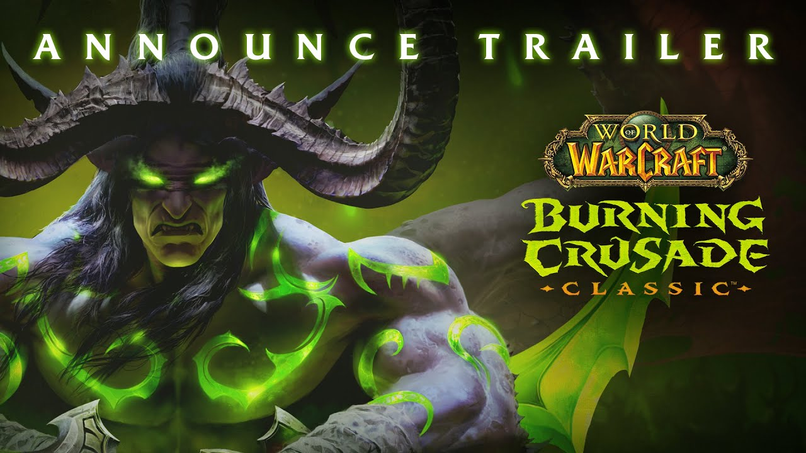
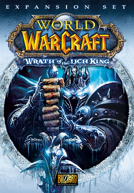
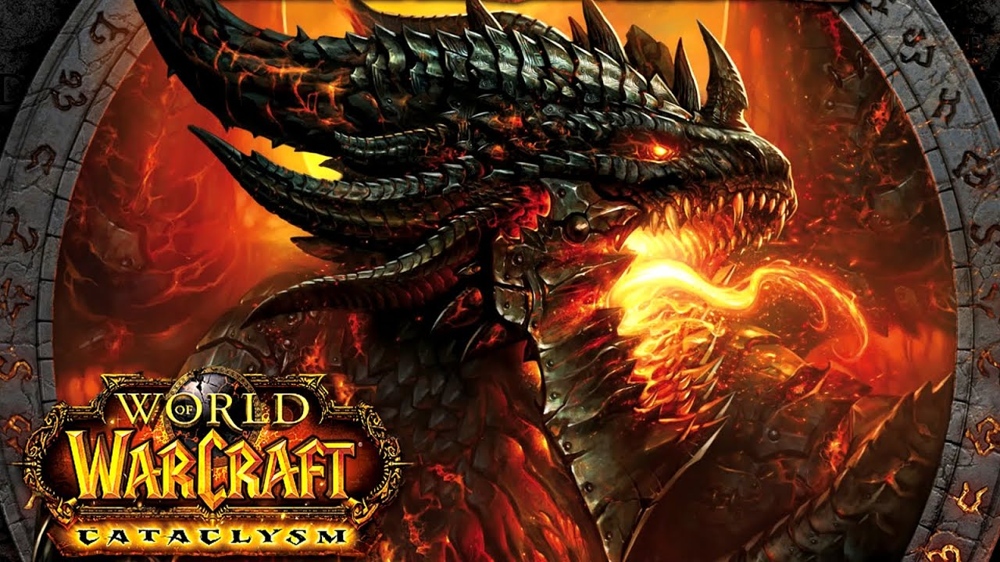
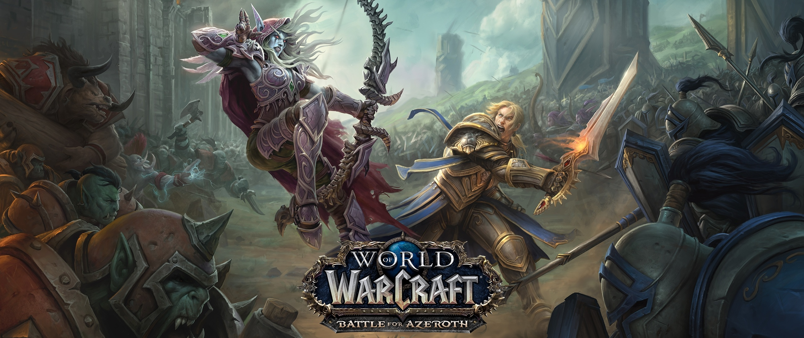

Ques es World of Warcraft
es un videojuego de rol multijugador masivo en línea desarrollado por Blizzard Entertainment. Es el cuarto juego lanzado establecido en el universo fantástico de Warcraft,
el cual fue introducido por primera vez por Warcraft: Orcs & Humans en 1994. World of Warcraft transcurre dentro del mundo de Azeroth,
cuatro años después de los sucesos finales de la anterior entrega de Warcraft, Warcraft III: The Frozen Throne.5 Blizzard Entertainment anunció World of Warcraft el 2 de septiembre de 2001.
La primera expansión del juego The Burning Crusade fue lanzada el 16 de enero del 2007. La segunda expansión, Wrath of the Lich King, fue lanzada el 13 de noviembre de 2008.
La tercera expansión, World of Warcraft: Cataclysm fue anunciada en el BlizzCon 2009 y fue lanzada el 7 de diciembre de 2010. La cuarta expansión, World of Warcraft:
Mists of Pandaria fue anunciada en el BlizzCon 2011 y fue lanzada el 25 de septiembre del 2012.
The Burning Crusade (2007)
es la primera expansión del MMORPG World of Warcraft. Fue lanzada el 16 de enero de 2007 a medianoche en Europa y Norteamérica y vendió cerca de 2.4 millones ese día convirtiéndose en el juego de PC
más rápidamente vendido de estas regiones.1 Ese mismo día fue lanzado en Singapur, Tailandia, y Malasia. En Australia y Nueva Zelanda fue lanzado el 17 de enero de 2007.1 En total, se vendieron aproximadamente 3.53 millones de copias en el primer mes, de las cuales 1.9 millones fueron en Norteamérica,
más de 100.000 copias en Australasia, y cerca de 1.6 millones en Europa.

Ahora, el videojuego es gratuito4 Posteriormente fue luego lanzado en Corea del Sur el 1 de febrero del 2007;
en Taiwán, Hong Kong, y Macao el 30 de abril del 2007.56 El juego fue publicado en China el 10 de septiembre del 2007.7
Conocer mas
World of Warcraft: Wrath of the Lich King
es la segunda expansión del MMORPG World of Warcraft, después de The Burning Crusade. Amplía el contenido del mundo de Warcraft de manera sustancial, incluyendo entre otras cosas, el continente Rasganorte, hogar del Rey Exánime. Fue anunciado en el primer día del BlizzCon 2007,
el 3 de agosto de 2007. Wrath of the Lich King fue lanzado el 13 de noviembre de 2008, vendiendo 2.8 millones de copias dentro de las primeras 24 horas de disponibilidad.
Esto lo hace el juego de computadora más rápidamente vendido de todos los tiempos, superando al impuesto por la anterior expansión The Burning Crusade que vendió 2.4 millones en sus primeras 24 horas. La expansión ha sido censurada en China por su gobierno principalmente por tratar temas relacionados con la muerte, aspectos que son tabú en China. Tras las negociaciones con el gobierno chino y cambios en el distribuidor, World of Warcraft fue desconectado y tras el cambio de distribuidor fue vuelto a poner en línea manteniéndose una disputa administrativa sobre el mismo.
WotLK recibió el premio al Mejor Videojuego en la categoría de empresas otorgado por el certamen imagina en su edición del año 2009.

World of Warcraft: Cataclysm
es la tercera expansión para el videojuego de rol multijugador masivo en línea World of Warcraft, sucesor de World of Warcraft: Wrath of the Lich King.
Se anunció oficialmente en la BlizzCon el 21 de agosto de 2009, aunque desarrolladores e investigadores descubrieron los detalles antes de que fuera anunciado oficialmente por Blizzard Entertainment.
Fue publicado oficialmente el 7 de diciembre de 2010.

World of Warcraft: Battle for Azeroth
es la séptima expansión del videojuego multijugador masivo en línea (MMORPG) World of Warcraft, siguiendo a los acontecimientos de Legión. Se anunció en la BlizzCon del año 2017 el 3 de noviembre de 2017.
Estuvo disponible para preordenar desde el 30 de enero de 2018, y se lanzó al mercado el 14 de agosto del año 2018.
La expansión elevará el límite de nivel desde 110 a 120, introducirá los continentes de Kul Tiras y Zandalar, agregará mazmorras o calabozos e búsquedas o misiones, agregará bandos de guerra (20 jugadores para el modo PvE contra NPC de facciones opuestas),
agregará islas desconocidas e introducirá cuatro razas aliadas tanto para la Alianza como para la Horda.

Conocer mas